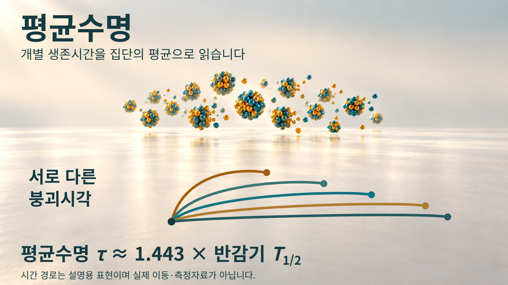
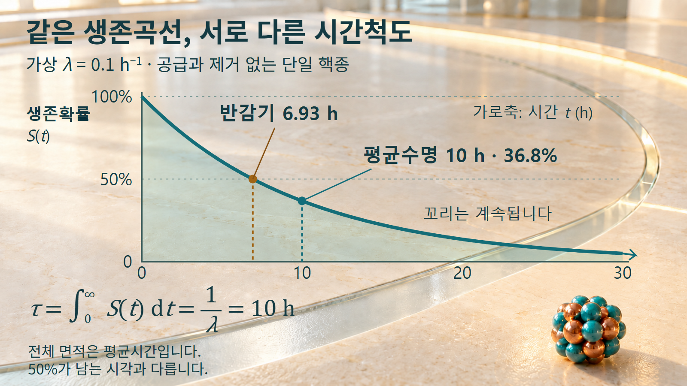
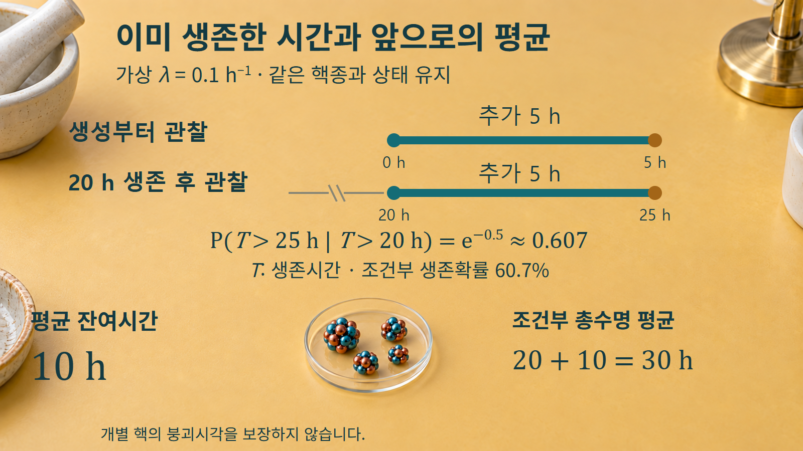

방사성붕괴와 시간 · 051
평균수명
개별 생존시간의 평균과 반감기의 차이
같은 핵종도 개별 붕괴시각은 서로 다릅니다. 평균수명은 이 생존시간 분포를 하나의 시간으로 요약하며, 반감기와는 다른 질문에 답합니다.

개별 생존시간과 집단의 평균
방사성 핵 하나가 생성된 순간부터 붕괴할 때까지의 시간을 생존시간 T라고 하겠습니다. 똑같은 핵종과 상태를 준비하더라도 어떤 핵은 일찍 붕괴하고, 다른 핵은 오래 남습니다. 따라서 T는 미리 하나로 정해 알려진 시간이 아니라 여러 값이 가능한 확률변수입니다. 평균수명 τ는 이 확률분포에서 생존시간의 기댓값, 곧 이론적인 평균을 뜻합니다.
많은 핵의 생존시간을 모두 관찰해 더한 뒤 핵의 수로 나누면 표본평균을 얻습니다. 표본평균은 실제로 관찰한 집단의 값이고, τ는 모형이 정하는 분포의 값입니다. 관찰한 핵이 적으면 두 값이 크게 다를 수 있습니다. 또한 관찰이 끝날 때까지 아직 남은 핵을 빼고 이미 붕괴한 핵만 평균하면 긴 생존시간을 놓치므로 원래 집단의 평균수명과 같은 계산이 아닙니다.
이 글은 한 가지 핵종과 핵상태의 붕괴상수 λ가 일정하고 양수인 지수모형을 다룹니다. λ는 남아 있는 핵 하나의 단위시간당 붕괴 경향을 나타냅니다. 시료 전체의 잔존량을 설명할 때에는 외부에서 새 핵이 들어오거나 핵이 계 밖으로 빠져나가지 않는 조건도 둡니다.
생존확률과 평균수명의 관계
시각 t까지 붕괴하지 않을 확률을 S(t)라고 쓰면 S(t)=e−λt입니다. S는 0과 1 사이의 무차원 수이며, λt도 무차원이어야 합니다. 생존시간이 특정 구간에 들어갈 가능성의 밀도는 f(t)=λe−λt입니다. NIST의 지수분포 설명은 이 생존함수와 밀도함수, 평균과 중앙값을 함께 제시합니다.
평균수명은 이 생존확률곡선 아래의 전체 면적과 같습니다.

여기서 면적은 시간에 대한 생존확률의 누적입니다. 높이는 무차원이고 가로축은 시간이므로 면적의 단위도 시간입니다. 모든 생존시간이 음수가 아닌 경우 평균을 이 누적으로 나타낼 수 있으며, 지수함수를 적분하면 τ=∫0∞S(t)dt=1/λ가 됩니다. 그림에 보인 유한 구간의 음영만 더한 값은 아직 무한 시간까지의 전체 평균이 아닙니다.
반감기 T1/2는 S(t)=0.5가 되는 시각이므로 이 분포의 중앙값입니다. T1/2=(ln 2)/λ와 τ=1/λ를 비교하면 τ=T1/2/ln 2≈1.443 T1/2입니다. 오래 남는 생존시간의 꼬리가 평균을 뒤쪽으로 끌어 평균수명이 중앙값보다 길어집니다. IAEA 교재의 인쇄 19쪽 식 1.18~1.21에서도 평균수명과 붕괴상수의 관계를 확인할 수 있습니다.
반감기 환산과 생존비율 계산
예시 1은 λ=0.1 h−1인 가상 핵종입니다. 평균수명은 τ=1/(0.1 h−1)=10 h이고, 반감기는 (ln 2)/(0.1 h−1)≈6.93 h입니다. 두 시간이 같은 핵종을 설명하지만 각각 평균과 중앙값이라는 서로 다른 통계량을 나타냅니다.
10시간 뒤의 생존확률은 S(10 h)=e−0.1×10=e−1≈0.368입니다. 따라서 평균수명이 한 번 지났을 때 약 36.8%가 남는다는 뜻입니다. 모든 핵이 10시간에 맞추어 붕괴하거나 이때 정확히 절반이 남는다고 해석하지 않습니다. 작은 실제 집단의 잔존 비율은 이 기대 비율 주위에서 변동할 수 있습니다.
예시 2는 반감기를 먼저 아는 경우입니다. 가상 반감기가 2 h라면 λ=(ln 2)/(2 h)≈0.3466 h−1이고 τ=1/λ≈2.89 h입니다. 또는 2 h를 ln 2로 나누어 같은 답을 얻습니다. 여기서 반감기에 0.693을 곱하면 관계를 거꾸로 적용한 값이 됩니다. 두 예시의 입력은 계산 설명을 위한 가상값이며 실제 핵종의 평가자료나 측정결과가 아닙니다.
핵종 재고의 시간척도
처음 핵수가 N0인 집단에서는 평균적인 잔존 핵수를 N(t)=N0e−t/τ로 표현할 수 있습니다. 시간을 τ로 나누면 평균수명이 몇 번 지났는지 나타내는 무차원 비율이 됩니다. 같은 핵종의 서로 다른 초기량을 비교할 때에는 각 집단의 N/N0를 사용하여 시간척도와 출발량을 분리합니다.
예를 들어 같은 λ의 두 시료 중 하나에 처음 핵이 두 배 들어 있다면, 같은 시간 뒤의 기대 잔존 핵수도 두 배입니다. 그러나 τ는 변하지 않습니다. 핵의 수가 많아졌다는 이유로 개별 생존시간 분포가 길어지는 모형이 아니기 때문입니다. 평균수명은 양을 정하는 수치가 아니라 감소가 진행되는 시간척도입니다.
실제 재고를 계산할 때는 기준 시각, 핵종별 초기량, 새 생성과 이동 여부를 먼저 확인합니다. 다른 핵종이 함께 있으면 각각의 λ로 계산한 기여를 합쳐야 하며, 여러 지수항의 합을 임의의 단일 평균수명으로 바꾸면 시간에 따른 변화가 달라집니다. 모핵종에서 계속 공급되는 딸핵종 문제도 이 글의 공급 없는 집단과 구분합니다.
조건부 잔여수명과 적용 한계
이미 s만큼 생존한 핵을 관찰할 때 관심 대상은 생성부터의 전체 시간이 아니라 앞으로 더 남을 시간일 수 있습니다. 같은 일정 λ 조건에서 추가 t만큼 생존할 조건부확률은 S(s+t)/S(s)=e−λt입니다. 분자와 분모에 공통으로 들어 있는 e−λs가 약분되므로 이미 지난 s가 결과에서 사라집니다. 이 성질을 지수분포의 기억 없음이라고 부릅니다.
예시 1과 같은 λ=0.1 h−1에서 s=20 h, t=5 h를 대입하면 e−0.1×25/e−0.1×20=e−0.5≈0.607입니다.
이미 20시간을 생존했다는 조건에서도 앞으로 5시간 더 생존할 확률은 약 60.7%입니다.

이때 평균 잔여시간은 여전히 10 h입니다. 반면 생성부터 붕괴까지의 조건부 총수명 평균은 이미 지난 20 h를 포함하여 20 h+10 h=30 h입니다. 처음에 정의한 무조건부 평균 10 h와 총수명 평균 30 h는 관찰 조건이 다른 질문에 대한 답입니다. 이를 혼동하면 오래 살아남은 핵이 평균수명을 이미 넘었으므로 곧 붕괴해야 한다는 잘못된 결론에 이릅니다.
기억 없음은 핵이 젊어지거나 시간이 되돌아간다는 뜻이 아닙니다. 동일한 핵상태와 일정 λ라는 가정 아래 미래 구간의 확률분포가 같다는 뜻입니다. 상태가 달라지거나 다른 감소 과정이 섞인 문제에 이 식을 그대로 적용하지 않습니다. 또한 10 h와 30 h는 평균이며 어느 개별 핵의 붕괴시각도 보장하지 않습니다.
평균·중앙값·개별 수명의 구분
평균수명을 읽을 때는 무엇을 평균하는지, 관찰 조건이 붙었는지, 어떤 단위를 쓰는지 함께 확인합니다. 아래 표의 잔존 비율은 일정 λ의 이론적 확률이며 작은 표본의 정확한 개수를 뜻하지 않습니다.
| 구분 | 정의와 관계 | 해당 시각의 생존확률 |
|---|---|---|
| 평균수명 τ | 생존시간의 기댓값 · 1/λ | e−1≈36.8% |
| 반감기 T1/2 | 분포의 중앙값 · (ln 2)/λ | 50% |
| 개별 생존시간 T | 실제 핵마다 다른 확률변수 | 하나의 고정 비율로 지정하지 않음 |
| s 생존 후 평균 잔여시간 | 일정 λ에서 τ | 추가 τ까지의 조건부확률 36.8% |
τ는 시간, λ는 시간의 역수입니다. 평균수명과 반감기의 환산에는 ln 2가 들어가며, 개별 생존시간에는 정해진 마감 시각이 없습니다. 이러한 구분을 유지해야 평균수명을 재고 변화와 관찰 조건에 맞게 사용할 수 있습니다.